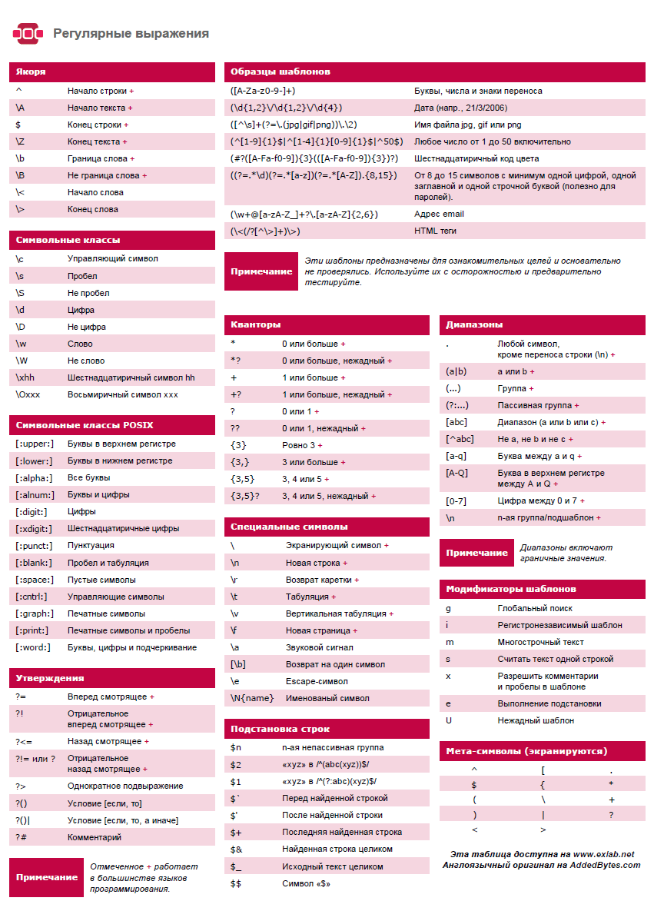

Регулярные выражения
Оглавление
Теория
Использование групп при замене (частичное изменение текста)
Иногда бывают ситуации, когда необходимо найти при помощи регулярного выражения кусок текста и например поменять в нем слова местами или заменить только часть найденного текста.
Данную задачу можно решить обращаясь к группам регулярных выражений (части регулярного выражения заключенные в круглые скобки).
К группам можно обращаться 2 способами:
- через символ доллара $0 - $9 (работает в IDEA)
- через обратный слеш \0 - \9 (работает в python)
Обращение через $ (IDEA)
Важно заметить, что данный синтасис поддержиается не всеми текстовыми редакторами и языками. Вот простой пример показывающий как добавить слово в найденное предложение.
Исходный текст:
как тебя зовут друг
Регулярное выражения для поиска текста:
(.*зовут)\s+(друг)
Регулярное выражения для замены:
$1 дорогой $2
В результате замены получим:
как тебя зовут дорогой друг
Обращение через косую черту (python)
>>> import re
>>> data = 'Вася пупкин дурак красавчик'
>>> pattern = '(.*) (дурак) (.*)'
>>> a = re.sub(pattern, r'\1 не \2 \3', data)
>>> a
'Вася пупкин не дурак красавчик'
Представленный пример выше пример будет работать если в шаблоне было
использовано меньше 9 групп. Если групп больше 9, то можно ссылаться на них при
помощи конструкции вида \g<12>.
Полезные ссылки:
Шпаргалка
Шпаргалка по синтаксису regexp

Примеры
Поиск текста записанного через тире
Условия регулярного выражения:
- текст должен начинаться с большой буквы
- тире может быть только 1 или его не будет сосвсем
- текст должен быть длинной минимум 3 символа, максимум 15
Пример текста:
Test-test
Решение:
^(?=.{3,15}$)[A-Z][a-z]+-?[a-z]+$
Валидация email
Если возникла идея валидировать email при помощи регулярного выражения, то самый лучший способ это сделать, это проверить, что в строке пристуствует символ @. Все остальные варианты будут слишком сложными и все равно не будут покрывать всех возможных вариантов.
Решение:
.+@.+
Материалы по данной теме:
Удаление повторяющихся слов
Удаляет повторяющиеся слова:
>>> import re
>>> data = 'Вася Вася пупкин Вася дурак Вася красавчик'
>>> pattern = r'(\b\w+\b\s)(?=.?\1)'
>>> a = re.sub(pattern, '', data)
>>> a
'Вася пупкин Вася дурак Вася красавчик'
Удаляет повторяющиеся слова, даже те, что не идут подряд.
Вариант для киррилицы:
>>> import re
>>> data = 'Вася Вася пупкин Вася дурак Вася красавчик'
>>> pattern = r'(\b[а-яА-яёЁ]+\b\s)(?=.*?\1)'
>>> a = re.sub(pattern, '', data)
>>> a
пупкин дурак Вася красавчик
Вариант для латиницы:
(\b\w+\b\s)(?=.*?\1)
Ссылка на оригинальную статью.